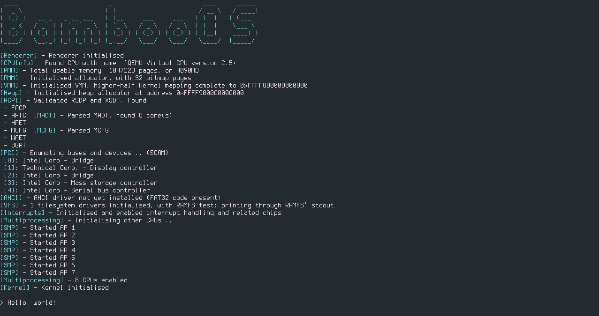
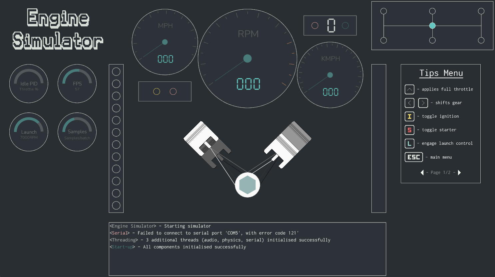
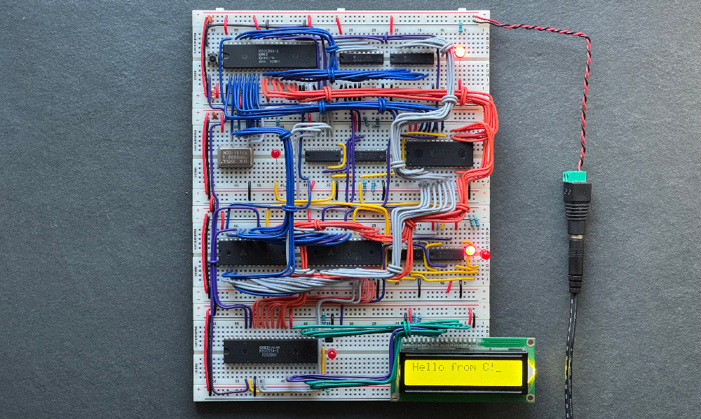
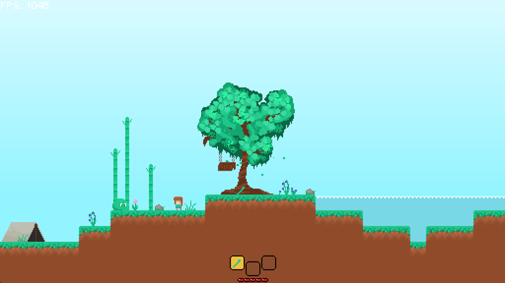

Education
Formal Education
-
 University of St Andrews -
Computer Science MSci
University of St Andrews -
Computer Science MSci
2025-29 | Best in Year 2 CS (19.2/20.0)
Year Grades:
- Year 2 - 19.2/20.0 (first class)
Prizes & Achievements:
- Best in Second Year Prize - Awarded for being the highest performing student in second year, sponsored by KANA Software (Verint Systems)
- Medal (Best in Year) - CS2003 Advanced Internet Programming, with 19.9/20.0
- Dean's List (2025/26) - placed on the Dean's List for academic achievement
- Entered via Direct Entry to Year 2 due to qualifications and experience
-
Shebbear College -
A Levels
2023-25 | Grade: A*A*A*A* in Computer Science, Further Maths, Maths and Physics (top 0.7% of England)
Other Achievements & Activities:
- Head of School from 2024-25 - this involved large amounts of public speaking, teamwork, and responsibility
- Best in School for A Level Results 2025
- Best in School Computer Science and Mathematics Prizes
- Further Mathematics GCSE mentor
- Academic and Music Scholar
-
Shebbear College -
GCSEs (1-9)
2010-23 | 10 grade 9s, 2 grade 8s - 9 is the top grade
Professional Certifications
-
IBM -
DevOps and Software Engineering Professional Certificate
2026 - 15-course certificate spanning 240 hours
Covered areas including:
- DevOps with Agile + Scrum
- CI/CD
- RESTful APIs
- Docker + Kubernetes
- Microservices and Serverless
- TDD + BDD (Gherkin, Cucumber, Selenium)
- Security, Monitoring and Observability
-
Trinity College London -
ATCL Piano
2023-25 - Piano diploma equivalent to undergraduate 1st year
Involved performances of a wide range of repertoire (including pieces by Mozart, Bach, Ravel, Debussy and Brahms) for roughly 38 minutes.
While preparing for the diploma, I was a finalist in the ISA Young Musician of the Year competition in 2024, held at St Hilda's College Oxford.
-
University of St Andrews - Computer Science MSci
2025-29 | Best in Year 2 CS (19.2/20.0)
Year Grades:- Year 2 - 19.2/20.0 (first class)
Prizes & Achievements:- Best in Second Year Prize - Awarded for being the highest performing student in second year, sponsored by KANA Software (Verint Systems)
- Medal (Best in Year) - CS2003 Advanced Internet Programming, with 19.9/20.0
- Dean's List (2025/26) - placed on the Dean's List for academic achievement
- Entered via Direct Entry to Year 2 due to qualifications and experience
-
Shebbear College - A Levels
2023-25 | Grade: A*A*A*A* in Computer Science, Further Maths, Maths and Physics (top 0.7% of England)
Other Achievements & Activities:
- Head of School from 2024-25 - this involved large amounts of public speaking, teamwork, and responsibility
- Best in School for A Level Results 2025
- Best in School Computer Science and Mathematics Prizes
- Further Mathematics GCSE mentor
- Academic and Music Scholar
-
Shebbear College - GCSEs (1-9)
2010-23 | 10 grade 9s, 2 grade 8s - 9 is the top grade
Formal Education
-
IBM - DevOps and Software Engineering Professional Certificate
2026 - 15-course certificate spanning 240 hours
Covered areas including:
- DevOps with Agile + Scrum
- CI/CD
- RESTful APIs
- Docker + Kubernetes
- Microservices and Serverless
- TDD + BDD (Gherkin, Cucumber, Selenium)
- Security, Monitoring and Observability
-
Trinity College London - ATCL Piano
2023-25 - Piano diploma equivalent to undergraduate 1st year
Involved performances of a wide range of repertoire (including pieces by Mozart, Bach, Ravel, Debussy and Brahms) for roughly 38 minutes.
While preparing for the diploma, I was a finalist in the ISA Young Musician of the Year competition in 2024, held at St Hilda's College Oxford.
Professional Certifications
Projects
BambooOS

BambooOS is a feature-rich, x86_64 Operating System written in C with a UEFI bootloader, command-line, and support for:
- Higher-half kernel
- ACPI tables (RSDT, XSDT, MCFG, MADT)
- Symmetric Multiprocessing (starting all other APs)
- Full physical memory manager
- Virtual memory manager
- Heap allocator (malloc, free, realloc)
- PCI support
- Standard library functions
- Interrupt handling
- R/W to disk and FAT32 driver
Engine Simulator

Engine Simulator is an application designed to accurately simulate the sound of an engine. Written in C++, the application uses physics and fluid simulations to model the physical engine, combustions, valves, and much more. The application also comes with a custom, completely hand-written UI drawn pixel-by-pixel, which is beautifully animated.SC-8088

The SC-8088 is a computer designed and built by me, using the famous 16-bit Intel 8088 processor (a variant of the 8086). The computer has 992K of RAM and 32K of ROM, so is fairly powerful, and I have plans to add VGA output and PS2 keyboard support soon. This project followed on from a 6502-based computer I built back in 2022, however, this computer is the first which is completely designed by me from the ground up, and was built over the short span of 2 and a half days.And many more...

I have worked on numerous projects in Java, both in the past and recently on my degree course. In addition to the languages used in these projects, I have also worked with Haskell, Python, and Javascript.
Contact
Feel free to reach out to me via my LinkedIn.